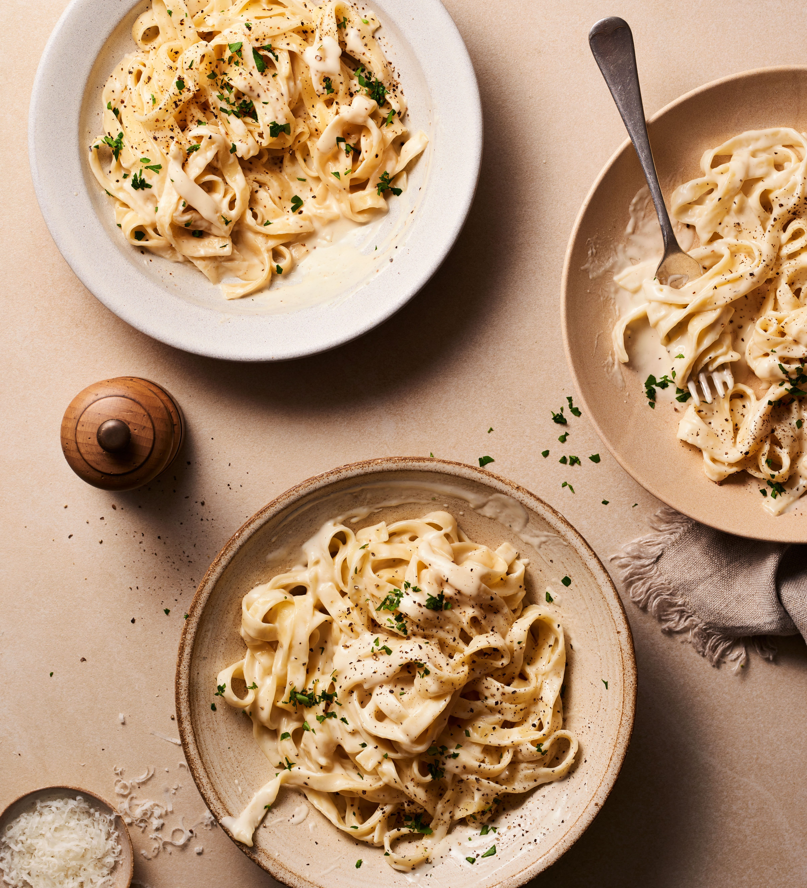

Creamy garlic pasta is a comforting and rich dish that’s perfect for a quick and satisfying meal. The smooth, velvety sauce coats every strand of pasta, delivering a warm and indulgent flavor with every bite. It’s simple yet elegant, making it ideal for both busy weeknights and cozy dinners.
The combination of garlic, cream, and parmesan creates a deep, savory taste hat feels restaurant-quality without requiring complicated steps. With just a f ew ingredients, this dish comes together easily while still feeling special and flavorful.